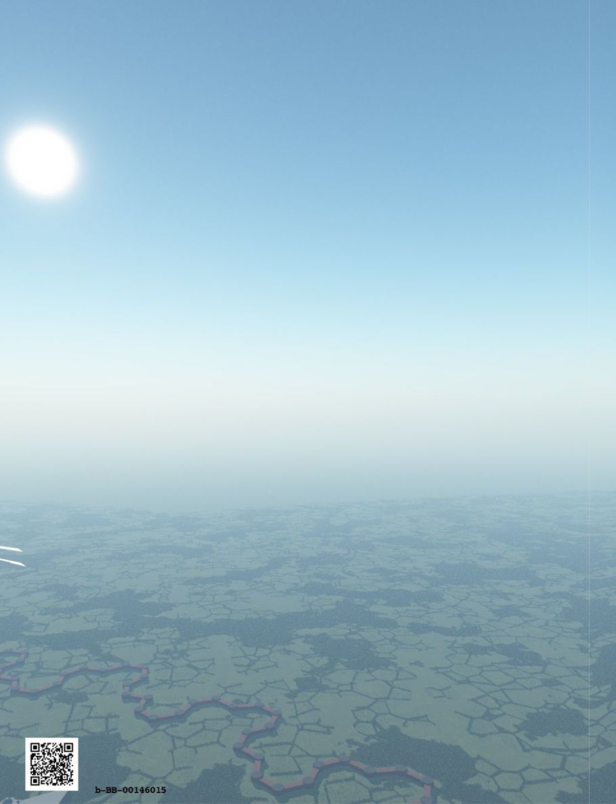

| ファンタジー世界構築のための質問リスト②: 人々と風習編 (RasenWorks) | |
| 神楽坂らせん | |
| RasenWorks (2016) | |
Patricia C. Wredeによる"Fantasy Worldbuilding Questions" http://www.sfwa.org/tag/world-building/ の日本語訳です。
月刊群雛2014年08月号～2015年02月号まで全５回連載された「異世界構築質問リスト」をまとめました。
───────────────────────
はじめに
この質問リストは、自らの創作物語のために、現実感あふれる架空の世界観を構築しようという、ファンタジー作家の試みを支援するものです。
数多くの質問リストの中から、今回は「人々と風習」に関する質問をピックアップしました。
原文では、いくつかの質問が複数の項目に併記されています。この和訳版の質問リストでは可読性を重視し、本項での初出の質問のみ残しました。重複する質問については初出の参照先を明記してありますので、そちらをご覧ください。その他、この原稿に掲載できなかった質問については、『月刊群雛』やシリーズ別巻、または『ファンタジー世界構築のための質問リスト〈完全版〉』をご参照ください。
これらの質問の多くは、ある物語にとっては参考になったり不可欠であったりしますが、すべての物語の条件・状況に適合できるほど万能なものではありません。小説を書き始める（もしくは書き終える）ために必要な全ての、あるいはいくつかの質問に、作家が必ず答えなければならないというものでもありません。
矛盾のない......あるいは、つじつまが合わない世界観と背景とは、どのようなものなのかと、作家に考えていただこうという発想から、この質問リストをご用意いたしました。お役に立ちそうならば、どうぞご活用ください。そうでなければ、そっと閉じてください。
この質問リストは、網羅的なものでも最終的なものでもありません。しかし、作家一人ひとりが個々の架空世界についてリストをまとめようとする場合の、きっかけにはなるでしょう。
【異世界構築質問リスト】
●人々と風習
［Ａ 一般］
（１）平均的な人は歴史を信じていますか、または実際に根拠がある歴史も昔話のように否定しようとするでしょうか？（例えば、トロイの木馬の出来事等） → 物理的および歴史的特徴Ｄ（２）へ
（２）野生児はどんな服装をしていますか？ 誰が着せていますか？ 野生児の存在は社会的に許されていますか？
（３）ほとんどの人はここでどのように生活していますか？
［Ｂ 習慣・風習］
（１）天候や気候は、暑い国での昼下がりのシエスタのような習慣や風習に貢献していますか？
（２）何が正常な家族単位と考えられていますか？ 拡張された家族（部族、一族等？）はどのようなものでしょうか？ 家族のつながりと責任はどの程度重要ですか？
（３）この国の文化の中の通過儀礼とはどのようなものですか？ 彼らはどうやって騎士と呼ばれるようになりますか？ それらの儀式が形式化していますか？ それは非公式なものでしょうか？ 男性と女性とでは異なりますか？ 貴族や農民では？
（４）出産、家族に新しい子が生まれたとき、家族にどのような習慣がありますか？ 母は一定期間隔離されていますか？ 子供には何か風習で行われる措置がありますか？ 両親、祖父母、君主、司祭に対して新しい子の正式な発表はありますか？ ごちそうやお祝いをしますか、それとも悪魔や不運を集めないよう静かにしていますか？
（５）通常、出産のために存在するのは誰ですか？ それは厳密に女性だけの問題ですか？ 男性が関与していますか？ または、この世界で唯一の女性のみが子供を産むことができるのでしょうか？
（６）何者が子供を発生させますか？ 通常何歳で彼らは性教育を受けたり訓練され始めたりするのですか？ それは誰によって？ その間、彼らは公共機関では準大人料金になりますか？ （そのように扱われますか？） 彼らは大人とは異なる服装をしますか？ （他から見た目で判るようになりますか？） もしそうなら、出産後、彼らの着こなしは大人向けに変更されるのでしょうか？
（７）死と埋葬にはどのような習慣がありますか？ 死体を扱う人（医師、聖職者、葬儀屋、不可触民）の特別なクラスはありますか？ 魂を空に飛ばすため髪を燃やす、ゾンビ化を防ぐために体を燃やす、（訳注：三途の川の？）船頭のために目にコインを挟む、等の事が行われますか？ なぜそうしなければならないのでしょうか？ 死者は崇め恐れられていますか？ それとも無視されますか？
（８）個人的な武器はそれらを買う余裕のある誰もが利用できますか？ 所持は風習や法律によって「貴族だけのために」等と考えられていますか？ 特定のクラスの武装を禁止する法律はありますか？
［Ｃ 食事］
（１）男性と女性、親と子、奴隷や主人は、別々に食べますか、または誰もが一緒の食卓で食べていますか？ テーブルには席順はありますか？ （訳注：上座、下座等）
（２）特別な祭日用の料理等がありますか？ どのような食品／飲料が、特定の休日、葬式、結婚式等のイベントや季節と関連していますか？
（３）食品の量と質以外に、正式なハイクラスのディナーと通常の食事はどのように異なりますか？ ハイクラスのマナーは普通人の日常のものとは異なるのですか？
（４）どのような食器が使用されていますか？ フォーク、ナイフ、スプーン、箸等。
（５）典型的な上流階級の食事の順番はどうでしょうか？ ワインで始まりスイーツで終わりますか？ シチュー、サラダ等の順番はありますか？ もしくは一度にすべてのものが食卓に並ぶのでしょうか？
（６）ドワーフ用の背の高い椅子、狼男のための生肉、ハーピーのための止まり木等、異なる人種／種のゲストをもてなすために必要な特別な手配はありますか？ 異なる人種の食べる習慣が彼らの文化にどのように反映されますか？ こうした難しい人種間の社会的相互作用（訳注：一緒に食事等）はありえるでしょうか？
（７）衛生上、未処理の生水は飲んでも十分安全ですか？ そうでなければ、どのような物を人々は代わりに飲みますか？
（８）食事用テーブルに特別な形状がありますか？ （丸、楕円形、正方形、長方形等）どこがゲストのための「名誉の場所」となっていますか？ 世帯の重要なメンバーが座る（リクライニング等）場所は決まっていますか？
（９）宗教上食べてはいけない等の、「これは、食用であっても、食べられません！」といったものはありますか？ それはなぜ？ いくつかの一般的なヒトの食品は、ドワーフやエルフには有毒ですか？ 逆に人間には有毒なものがありますか？
（10）食品や調味料はどのような種類の異なる人種（異なる文化／さまざまな国）の特徴になっていますか？
［Ｄ 挨拶や会議］
（１）誰かに会うとき、どのように迎えるでしょうか？ 握手や弓を鳴らすといった儀式やウェイブ（訳注：集団で？）、武器を持っていないことを示すために手をふる等のジェスチャーはありますか？ 歓迎のジェスチャーはこれらに由来しますか？ 魔術師のための特別な「われ武装せず」ジェスチャーはありますか？
（２）招待を受ける側と招待する側に挨拶の違いはありますか？ 男女の挨拶の違いはあるでしょうか。ヒト／非ヒトの場合はどうですか？
（３）歓迎ではなく侮辱するための挨拶時のジェスチャーはありますか？
（４）初対面の際は、お互いにどう自己紹介しますか？ 遠距離通話魔法、チャット等、お互いに出会う可能性のあるすべてのパターンではどうですか？ 性別や社会的地位の異なる人々を紹介する場合に優先順位はありますか？
（５）他のヒト／人以外の種族・クラスに紹介するべきでない種族・クラスはありますか？ 「真の名」は重要であり、明かされるべきではないといった風習があるならば、どのような状況で誰かが本当の名前であることを他人に伝えられるでしょうか？ （訳注：ゲドの真名等）
（６）紹介されたときに、誰かが呼び名を命名する等、あだ名に関連する習慣はありますか？ （例：最初の会議で名前やタイトルのすべてを語り、以後はあだ名を呼ぶ。「公ジョージ・エドワード・カンタベリー・ゴードン・デ・ラ・スイス・フォール・ホーシャム・ホワイトウォーター・フラミンガム・サンピエトロ伯爵侯爵そしてアバナシーの子爵、彼を今後〝ジョージ〟と言い表す。」等）
（７）既によく知っている誰かに挨拶する方法と見知らぬ人への挨拶にどんな差がありますか？ （抱きしめたり、手を振ったり、何もしない、等）ちょっとした距離（通りの反対側を通る程度の）でどのようにして知人を認め挨拶するのですか？ （少し帽子を傾けることでうなずく、身体をゆらしてウェイブ、または笑顔等）
［Ｅ ジェスチャー］
（１）誰かに会うとき、どのように迎えるでしょうか？ 握手や弓を鳴らすといった儀式やウェイブ（訳注：集団で？）、武器を持っていないことを示すために手をふる等のジェスチャーはありますか？ 歓迎のジェスチャーはこれらに由来しますか？ 魔術師のための特別な「われ武装せず」ジェスチャーはありますか？ → 人々と風習Ｄ（１）へ
（２）ジェスチャーとボディランゲージではこの社会の中でどういった位置づけですか？ 話しながら手で示すことを良しとしますか？ それとも下品と捉えたりするのでしょうか？
（３）歓迎ではなく侮辱するための挨拶時のジェスチャーはありますか？ → 人々と風習Ｄ（３）へ
（４）この文化の中で人々のための快適で丁寧な話し方の距離はどのくらいですか？ 他の文化／国／種族では？ これらの他文化の違いを人々はどのように理解していますか？
（５）どのようなジェスチャーが侮辱を表していますか？ それは何を意味するのですか？ 一部のジェスチャーは文化、人種、または時間に応じて、意味が異なりますか？ （例：〝Ｖ〟のピースサインは、アメリカでは勝利のサインだが、ヨーロッパでは非常に侮辱的だとされている。等）
（６）ジェスチャーやボディランゲージは、国によって異なるのですか？ 種間ではどうですか？ 一つのエリアで致命的な侮辱であっても他では問題ないものはありますか？ （左手で食べる等）
（７）敬礼、お辞儀等、敬意を示す方法はどういったものですか？ 誰に対してそのような敬意を示すことが期待されているでしょうか？ 長老たち、ランク内の上司、教師、聖職者等ですか？
［Ｆ 訪問］
（１）家族についてや仕事について、または政治や宗教については話さない等、必ず尋ねたり、逆に避けなければならない質問はありますか？ ホストがゲストに向けて話しかける可能性が高いトピックはありますか？ 逆にゲスト側からはどうですか？
（２）ホストとゲストの役割にシリアスな文化が関わることがありますか？ どのようなルールが定められているでしょうか？ （例：中東ではゲストにはまずパンと塩を与えなくてはならず、それなしで他の５種の食事を出してはならない）
（３）どんな物事が、ゲストを丁寧にもてなすために必要と考えられていますか？ 食品、読み物、個人的なガードやアテンダント、音楽、舞踊、エンターテイメント、一緒に寝る異性等？
（４）ホストの申し出に対する丁寧な対応はどんなものと考えられていますか？ 何か受け入れる事が失礼と考えられている事がありますか？ 断る、求める、または求ない事が失礼にあたる事がありますか？
（５）ゲストが到着すると、まず提供されるのが通例である食べ物や飲み物はありますか？ それは何でしょうか？ それとも提供はゲストのリクエストに応じてですか？
（６）様々な文化や人種の異なる食習慣が相互作用して揉め事になるような事があるでしょうか？ （例：次々と出る食事を断ってはいけないと思うゲストと、ゲストからストップされるまで出し続けなくてはならないと思ってしまう文化の食卓等）
［Ｇ 言語］
（１）同じ言語を話さない国々の間で商取引を促進する「貿易言語」はありますか？ ラテン語のような「ユニバーサルランゲージ」はありますか？ → 物理的および歴史的特長D（11）へ
（２）一部またはすべての人はバイリンガルですか？ 多くの人が知っている一般的な第二言語はありますか？
（３）司祭、兵士、魔術師、ギルドメンバー等のみで知られている「秘密の」言語や符丁がありますか？ なぜそれが開発されましたか？
（４）別の社会階級では話し方、構文、スラングに変化はありますか？ 別の職業、別の地域、別の種族ではどうでしょうか？
（５）地域ごとのローカル・スラング・フレーズはあり得るでしょうか？ （例：漁業の町では、グッドラックのことを「大漁」と言い、農業の町の人々は「予期しない収穫」と言う等）人々は、こうした個性豊かなフレーズをどのように使用するのですか？
（６）この文化の中で彼らの言語特有の単語はどのようなものがあるでしょうか？ （例：イヌイットの言語では雪の種類ごとに14以上の単語がある）人々が特有の単語をつくるのは重要なことと考えられていますか？ 彼らが世界を見る方法について、他からは何と言われていますか？
（７）この文化の人々は個々の名前を持っていますか？ または名前の代わりに多くのバリエーションをカバーする１単語がありますか？ 彼らは名前を特に重要でないものと考えていますか？ こうしたことは彼らの世界の見え方にどのように影響しますか？
（８）式典や特定の状況下で使ってはいけない言葉がありますか？ 丁寧な会社・組織で話してはいけない言葉はありますか？ これらの言葉は文化間、または人種間で使うような場合には異なりますか？
（９）人々は何をする（または言う）ことによって結婚を誓いあうのでしょうか？ また、逆に呪いの言葉として人々は何を使うのですか？
（10）どのように多くの言語がありますか？ それぞれがどう関係し（例えば、ロマンス諸語）、なぜそうなっているのですか？ ある言語は他の言語から単語やフレーズを借りていますか？ 何語が最も幅広く話されているでしょうか？ → 物理的および歴史的特長Ｄ（10）へ
（11）異なる人種（ドワーフ、エルフ等）では異なる言語がありますか？ または言語の差は種族よりも地理に基づいていますか？ ドラゴンや他の魔法の獣と話をするために学ぶ必要がある特別な言語がありますか？
（12）魔術師は魔法に使用される特殊な言語を持っていますか？ もしそうなら、どこで学ぶのですか？ この言語でおしゃべりをしても安全ですか？ 全てが自動的に魔法効力を発生してしまうなら、どうやって安全に新人に教えることができますか？ → 魔法と魔術師Ｂ（16）へ
［Ｈ 倫理と価値観］
（１）人々は何をする（または言う）ことによって結婚を誓いあうのでしょうか？ また、逆に呪いの言葉として人々は何を使うのですか？ → 人々と風習Ｇ（９）へ
（２）黄金や宝石、薬、お金、毛皮、トナカイ等、この社会で最も必要／最も貴重なものは何ですか？ なぜそれが望まれている／大切とされていますか？ 異なる人種では違う事物が大切とされていますか？ 非物質的なもの（情報や時間）が最も貴重なものである種族／文化はありますか？ なぜそのようになったのですか？
（３）現実のあなたには正常ではないまたは許容できないと考えられても、この社会の中で正常で許容できると考えられている物事はありますか？ （例：決闘、薬物、オープンな同性愛、一夫多妻、嬰児殺し）
（４）あなたには衝撃的と思えなくても、この社会の中で衝撃的と考えられている物事はなんでしょうか？ 例えば、女性の足首を見る、左利きで食べる、公共の場で書物を読む、等。 こうした行動を他人が見ていたらどう反応するのでしょうか？ 見なかったことにして背を向ける。警察を呼ぶ、剣を抜き決闘を申し込む......等など。
（５）この社会の中で名誉と考えられる／または普通に受け入れられる限界はどのあたりですか？ 「罪のない嘘」を許容できる社会でしょうか？ 受け入れられる「正しい」窃盗や、いかがわしい物、そうした職業や犯罪等についてはどうですか？ 嘘は隠蔽する・暴かれる等、どのような社会形態になっているでしょうか？
（６）結婚の誓いは何があっても壊れませんか？ 相手が悪人や人間のカスであることが判明した場合、あなたは関係を解消することができますか？ 騙されていた場合はどうなりますか？ 両者で争いになった場合、正しいと考えられているのはどのようなことでしょうか？ あなたができるベストな選択を決定しなくてはならないとしたら？ より新しい誓いを行う（訳注：別の良人の選択）、新しい宣誓をするまで現状維持、最も／少なくとも今よりも強力な人の所へ行く。それとも、自殺しますか？
（７）所有権に対する考え方はどのようなものですか？ 何が「窃盗」を構成し、どのように盗まれる可能性がありますか？ 宝石、金、名声や評判等。 泥棒は独立した犯罪者ですか？ 不法ギルド、法律で認可されたビジネスマン、または何かのメンバーですか？
（８）市民とみなされている者はどのような権利と権限を持つでしょうか？ （投票、泥棒からの保護、ローマの審問を受ける権利等）どのような責任がそれらに付随しますか？ （陪審義務、主の軍隊のための資金や騎士を提供する等）
（９）魔術師、外国人、子供、農民、女性等が、完全な市民より法的権利が少ないクラスとみなされていますか？ それはなぜですか？ 彼らは、精神的または道徳的に欠損していると考えられていますか？ 彼らは国に脅威や負担を与えるからですか？ または他に根拠があるのでしょうか？
（10）この文化の中で論争の対象は何ですか？ どういった話題だと、バーで良い会話が始められるでしょうか？ どういった話題だと、非友好的な議論が勝手に始まってしまいますか？
（11）社会的なタブーは何ですか？ どのような事がしてはいけないことでしょうか？ （オフィスに水着を着ていく等）語ってはいけないことはありますか？ タブーを犯した場合はどうなるでしょうか？ これらのタブーは、異人種間では異なりますか？
（12）最大の社会的失言にはどのようなものがありますか？ 正式なパーティで大声やげっぷ、女王／貴族の前に鎧を着ていく、男性か女性かどうかドワーフに尋ねる等。 どのような対象またはアクションが恥ずかしさや不快感を引き起こしますか？
（13）求愛、結婚や家族に対する社会の道徳観はどうなっていますか？ 結婚を認可するのは役所や宗教機関でしょうか？
（14）家族、町／都市、国、支配者／大統領、神等、生まれるだけで自動的に所属し、従う義務のあるグループはありますか？ その中で義務の階層はどれですか？ それはあなたの母の教えや皇帝の命令に従うことより貴いと考えられているでしょうか？
（15）人々の美の基準は何ですか？ 絵画や彫刻？ 洋服や家具？ 現実のあなたの基準とはどのように異なりますか？ （例：肥満がとても望ましく美しい形質と考える国）どのような美しさの基準が、様々な人種の身体的特徴に反映されていますか？ （例：ドワーフは、背の低いほど魅力的と思うかもしれない。狼は長い歯または特定の香りに惹かれる。等）
（16）各国の歴史上のヒーローや悪役（例えば、米国ではワシントンやリンカーン等）は誰ですか？ なぜ彼らはヒーロー／悪役であり、人々はどのように彼らを賞賛するのですか？ → 物理的および歴史的特徴Ｅ（５）へ
（17）人々が目指す理想の生活とは何ですか？ （引退したら国に帰り小さな家に住む、すばらしい玩具を買う、陸軍／海軍の役に立つ、等）
（18）この社会の反政府勢力やのけ者には、どのような種類がありますか？ どのように彼らと一般社会はつきあっていますか？ どんな行動や発想は、社会から公式に追放されることになるでしょうか？ 社会秩序に適合していない人々には何が起こりますか？ 町の中に彼らの受け入れセクションがありますか？ またはそれらは社会から見えず（「クローゼットの中に」）隠されますか？ それとも完全に国外に追放されますか？
（19）（法律ではなく）倫理の決定者は誰ですか？ 彼らはどのようにその地位になったのですか？ 社会的な決定者は誰ですか？ 社会の決定者はどのようにその地位になったのでしょうか？
（20）道徳的／倫理的な決定は、宗教の範囲と考えられれていますか？ それともいないですか？ （両方とも？ 片方だけ？）
［Ｉ 宗教と神々］
（１）様々な宗教は魔法にどのような見解を持っていますか？ 魔術を禁止していますか？ その理由は？ 宗教は魔術師である司祭／尼僧を必要としていますか？ → 魔法と魔術師Ｂ（３）へ
（２）実際の神々／神のような存在はいますか？ もしそうなら、彼らは積極的な役割を取りますか？ 神々を崇拝する寺院、教会、宗教はありますか？ 日常の人々の生活では神々はどう崇拝されていますか？ その理由はどのようなものでしょうか？ どのように多くの神々が存在し、それらの間に階層はありますか？ 良い神、悪い神等の区分けはありますか？ または、神々と話すことはそもそも無意味ですか？
（３）様々な宗教は非信者をどう見るのでしょうか？ 外国人や非人間ですか？ それとも国／統治者／政府をサポートしている者でしょうか。 宗教は一般人に興味を持っているのですか？
（４）出産、家族に新しい子が生まれたとき、家族にどのような習慣がありますか？ 母は一定期間隔離されていますか？ 子供には何か風習で行われる措置がありますか？ 両親、祖父母、君主、司祭に対して新しい子の正式な発表はありますか？ ごちそうやお祝いをしますか、それとも悪魔や不運を集めないよう静かにしていますか？ → 人々と風習Ｂ（４）へ
（５）死と埋葬にはどのような習慣がありますか？ 死体を扱う人（医師、聖職者、葬儀屋、不可触民）の特別なクラスはありますか？ 魂を空に飛ばすため髪を燃やす、ゾンビ化を防ぐために体を燃やす、（訳注：三途の川の？）船頭のために目にコインを挟む、等の事が行われますか？ なぜそうしなければならないのでしょうか？ 死者は崇め恐れられていますか？ それとも無視されますか？ → 人々と風習Ｂ（７）へ
（６）奇跡と魔法の間に違いはありますか？ もしあるなら、どのように区別していますか？ → 魔法と魔術師Ａ（３）へ
（７）緊張、対立等、神々の間にあからさまな敵意はありますか？ これはどのように教会の政治に影響しますか？ 人々の日常生活にはどうでしょうか？
（８）どの宗教が、この社会と密接に関わりますか？ 国教会はありますか？ 宗教の自由は当たり前ですか？ 人々は寺院／教会を、社会への寄生体として、あるいは社会の有用な部分として捉えていますか？
（９）神々は、人々がどのように動くかを気にしていますか？ その理由は？ → 人々と風習Ｈ（20）へ
（10）実際、実証可能な神々が存在する場合、信仰が彼らの礼拝にどのような役割を果たしていますか？ 彼らは様々な儀式の何が好みですか、その理由は？ どのような儀式・礼拝アイテムが、最高に良いものと考えられていますか？ 人々が参拝・礼拝するのは１つの神？ それとも複数の神々を選ぶことになっていますか？ 他の神を無視するか、誰もが正式にすべての神を崇拝するのですか？ どのように人々はどの神を崇拝することを決めるですか？ どのように彼らはどの寺・教会に所属することにしたのでしょうか？
（11）様々な宗教や哲学は、公共および民間の生活の中にどう影響するのですか？ 象牙の塔の学者や哲学者、神学者等、彼らはソクラテスのように市中で議論しますか？ 彼らの理論はどの程度の影響を人々に与え、実際に彼らの振る舞いを変える力を持っていますか？
（12）司祭や哲学者はフルタイムで彼らの仕事をしていますか？ または彼らは別の仕事が必要なのでしょうか？ フルタイムであれば、誰が彼らの生活をサポートしていますか？ 会衆、裕福な後援者、寺院の投資資金、それとも神自身？
（13）どのように神は人々に興味を持っていますか？ 彼らは、ギリシャパンテオン（けんか好きな巨人神）のような存在？ それともそれらを超越して理解できない存在でしょうか？ 神々が行えることや行うことには限界がありますか？ 神々は間違いを犯すことはありますか？ ／間違うことができますか？
（14）様々な寺院や哲学は、どのように古典的な〝悪の問題〟を説明しますか？ 彼らは、不運な出来事は常に罪悪への罰、人間形成のトレーニングであると考えますか？ それとも悪の拮抗（サタン、ロキ）の結果でそれらが防げなかったからと考えますか？
［Ｊ 人口］
（１）この国の人口は何人ですか？ 全世界の人口と比べてどうですか？ ここでは、土地の人口数で、村・町・都市のように区分されていますか？ → ワールドＡ（５）へ
（２）この国に住む人の多様性は？ どのように多くの異なる人種が住んでいますか？（ヒトまたは非ヒト） または信条等。通常、人々はどのようにこの国の様々な都市や町に住んでいますか？ 人口のパーセンテージは？ → 物理的および歴史的特長Ｅ（７）へ
（３）人々は移住していますか？ 南から北、海岸から山、農村部から都市部へ、等等。それはなぜですか？ 侵略、ペスト、ゴールドラッシュ等のせい？ 移住の結果その事態は解消されましたか？ 移住前の場所に残されている人々には、何が起きていますか？ → 物理的および歴史的特長Ｅ（８）へ
（４）この社会の都市住民と農業者や食品製造業者の適切な比率はどのくらいですか？ 農業生産が魔法に基づいている場合（気象予測、制御、土地の肥沃度調整等）、どれくらい多くの都市住民は、農業支援魔法が突然停止したら餓死してしまうのですか？ → 魔法と魔術師Ｄ（１）へ
（５）他国や他の領域からの入出国審査はありますか？ どうやって審査するのでしょうか？
（６）どの地理的エリアが最も人口密度が高いですか？ それとも低いですか？ 特定の地域や地形が、特定種族で人気があるのはどうしてでしょうか？
初出一覧
月刊群雛２０１４年８月号「ファンタジー世界構築のための質問リスト １」に掲載
●ワールド：基本原則／パラレルワールドの地球／地球とはまったく違う異世界
●物理的および歴史的特徴：一般／気候と地理／天然資源／世界史／特殊な国（々）の歴史
●魔術と魔術師：マジックのルール／魔術師（ウィザード）／魔法とテクノロジー／その他の魔法の質問
月刊群雛２０１４年９月号「ファンタジー世界構築のための質問リスト ２」に掲載
●人々と風習：一般／習慣・風習／食事／挨拶や会議／ジェスチャー／訪問／言語／倫理と価値観／宗教と神々／人口
月刊群雛２０１４年１１月号「異世界構築質問リスト ３」に掲載
●社会組織：一般／政府／政治／犯罪と法制度／外交／行われている戦争／兵器
月刊群雛２０１４年１２月号「異世界構築質問リスト ４」に掲載
●商業、貿易、公的生活：一般／ビジネスと産業／交通・通信／科学技術／医療／芸術とエンターテイメント／建築／都市要因／農村要因
月刊群雛２０１５年２月号「異世界構築質問リスト ５」に掲載
●日常生活／一般／ファッションと服装／マナー／ダイエット／教育／カレンダー
あとがき
本書はPatricia C. Wredeさんが1996年に発表された"Fantasy Worldbuilding Questions"の日本語版です。
発表された場所は、アメリカの創作手法やツールについて活発にやりとりされているＳＦＷＡ（サイエンス・フィクション＆ファンタジー著者協会）のWebサイトです。
最初に原文を見つけた時は、一見してあまり文章量もないし、自分に必要がありそうな部分だけ訳して使ってみたら良いかなぁ。程度の軽い気持ちだったのでした。
しかし、サイトのリンクを巡ってみると、あとからあとからどんどんとクエスチョンの波があらわれ、あっという間に広大な質問の海におぼれてしまいました。底に足もつかず、息継ぎもできない深い深い難問の海です。
世界を創ることは、自分が考えていた以上に深く、創作の海の深淵へと潜る必要があるのだと気がついた時にはもう後の祭り。あっぷあっぷで酸欠状態。脳に酸素が行き渡らない精神的潜行の苦しみが襲いかかってきたのです。でも、でも......、苦しいけれど、もう少し、もう少し、とクエスチョンの深みへ潜ってみると、いつしかこれが快感にかわってきてしまい......。ヤバイですね、クセになっちゃいました。（笑）
そんな苦しみとカイカンを、同じく創作を志す皆様に知ってもらえれば、と、日本独立作家同盟発行の『月刊群雛』で翻訳文を２０１４年８月号から不定期連載で全５回にわたって発表させていだだきました。
本書はその五回分の原稿から第二回分を再構成し、【人々と風習編】としてまとめたものです。
私の拙い英語力を信頼して和訳を快諾いただいた著者の Patricia C. Wrede さん、誤字脱字誤訳チェックを怒涛の勢いで行ってくださった『月刊群雛』編集チームの竹元かつみさん、晴海まどかさん、編集長の鷹野凌さん、その節はたいへんお世話になりました。残念ながら『月刊群雛』は２０１６年８月号で休刊してしまいましたが、文芸作品だけでなく、このようなツールの翻訳文も掲載してもらえた懐の深い雑誌でした。とても良い経験をさせていただきました。大いなる感謝を贈らせていただきます。
それから、急なお願いやワガママに嫌な顔ひとつせずステキでめっちゃ魅力的な表紙絵を提供してくださった米田淳一先生、とってもとってもありがとうございます！ 分冊に当たっても表紙の加工をお忙しいのに一瞬でやってくださいました。超感謝です！
なお、日本語訳のわけわからなさと読みにくさの全責任は私にあります。原文もＳＦＷＡのページで公開されていますので、変だなと思ったら原文を参照していただき、私のほうにもご一報いただければ嬉しく思います。
そして、この、ただただ質問が並んでいるだけというなんともマニアックで奇妙な本を手に取り、最後まで読んで下さった皆様、本当にありがとうございます。
２０１６年８月１日
神楽坂らせん
既刊情報
神楽坂らせんの作品
『ファンタジー世界構築のための質問リスト〈完全版〉』
アメリカファンタジー＆SF著者協会：SFWAのPatricia C. Wredeによる "Fantasy Worldbuilding Questions" の日本語訳です。
日本独立作家同盟の『月刊群雛』2014年８月号～2015年2月号まで全５回連載された「異世界構築質問リスト」をすべてまとめ、さらに独自の視点でSF向けの質問集も追記されています。
http://fwbqj.tumblr.com/
『らせん式ドラマロジー入門』
FreeMindというフリーウェアを使った、近代的らせん式小説執筆術の真髄をあますところなく大公開！
パソコンを使った執筆活動に興味がある方におすすめのロジカル小説執筆メソッド集のをボリュームたっぷりにお届け！
（プロは読まないでね！）
http://dramarogy.tumblr.com/
『yWriterで物語を書こう』
yWriter5という小説家向けのワードプロセッサがあります。
http://www.spacejock.com/yWriter5.html
このソフトを使って簡単な小説（今回は昔話に挑戦）を書く手法をまとめてみました。
おそらく本邦初の日本語解説書になるかとおもいます。
とっつきにいソフトですが、使い方がわかると大変強力な創作支援ツールです。
このツールの使い方はもちろん、小説の書き方も含めて知りたい方は是非御覧ください。
http://ywriter.tumblr.com/
『秀丸で傑作を書く！シリーズ』
不朽の名作テキストエディタ、「秀丸エディタ」を使って文章作品を書く
ノウハウを丁寧に解説した、極限までわかりやすい秀丸エディタガイドブックです。
・秀丸で傑作を書く！① 基本操作＆環境設定篇
http://hidehon1.tumblr.com/
・秀丸で傑作を書く！！ 正規表現＆アウトライン篇
http://hidehon2.tumblr.com/
『らせんのせかい』
日本独立作家同盟発行の『月刊群雛』にちょこちょこと掲載させていただいた作品たちの中から、ＳＦ作品だけを集めて短編集を作ってみました。２０１４年０６月号〜２０１６年０８月号まで、２年と２ヶ月の成長を一目で見れる作品集となっています。
http://rasenworld.tumblr.com/
『ふたりのブルべ～姉妹編』
「目的はイケメン・ゲット！」そんなちょっと（？）よこしまな理由で自転車の長距離マラソンイベント「ブルベ」に参加することに決めた早苗。 そこで出会ったのはなんと「理想の女性」だった！？
超ハイテンションノンストップ乙女ラブ＆ロングライド自転車ストーリー ここに開幕！
http://futaribrevet.tumblr.com/

ファンタジー世界構築のための質問リスト②
2016年8月1日 発行
著 者：Patricia C. Wrede著 / 神楽坂らせん訳
発 行：RasenWorks
©2015 神楽坂らせん Printed in Japan
神楽坂らせん
神楽坂で螺旋力を研究しつつ、主に作家向けのツールを整備したり翻訳したりしています。
Google+プロフィールページ：google.com/+神楽坂らせん
Google+では『本が好き』コミュニティの管理人もさせてもらっています。
https://plus.google.com/communities/105217771127890240722
